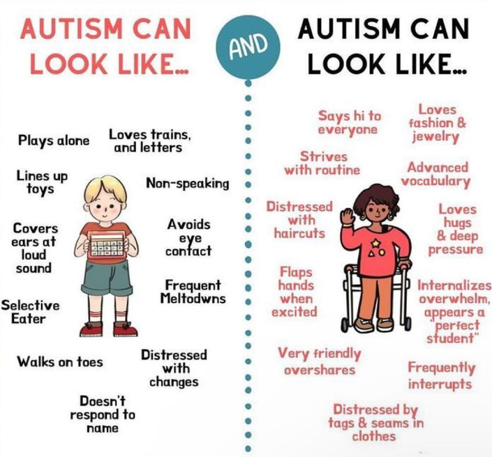

Աուտիզմի նախագիծ
11/4 Դասարան - Վահան Հովհաննիսյան, Մանե Մանուկյան, Էմիլ Գաբրիելյան, Անի Խաչատրյան
Ուսուցչուհի՝ Արմինե Խաչատրյան
ԵՊԲՀ "Հերացի" ավագ դպրոց
Ներածություն
Աուտիզմը (Աուտիզմի սպեկտրի խանգարում) ազդում է մոտավորապես 100 երեխայից 1-ի վրա: Այն կարող է հայտնաբերվել վաղ մանկության շրջանում և տարբեր կերպ ազդել մարդկանց սոցիալական հմտությունների և հաղորդակցության վրա:
Նկարների բաժին
